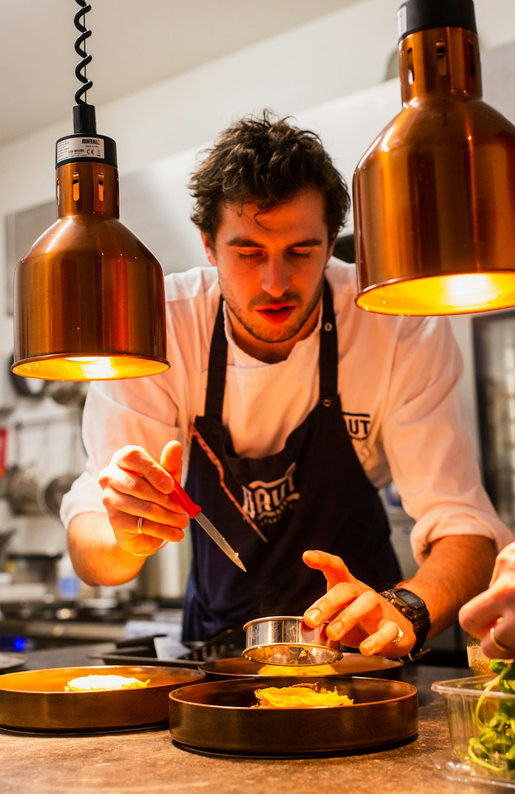

Missão
Oferecer refeições marcantes com qualidade, carinho e atenção aos detalhes.

Nossa história
O Sabor & Arte nasceu com a proposta de unir receitas tradicionais a uma apresentação contemporânea. Cada prato é pensado para destacar ingredientes frescos, serviço cuidadoso e uma experiência memorável.
Conhecer MenuOferecer refeições marcantes com qualidade, carinho e atenção aos detalhes.
Ser referência em gastronomia acolhedora e criativa na cidade.
Frescura, respeito, hospitalidade, transparência e paixão pela cozinha.